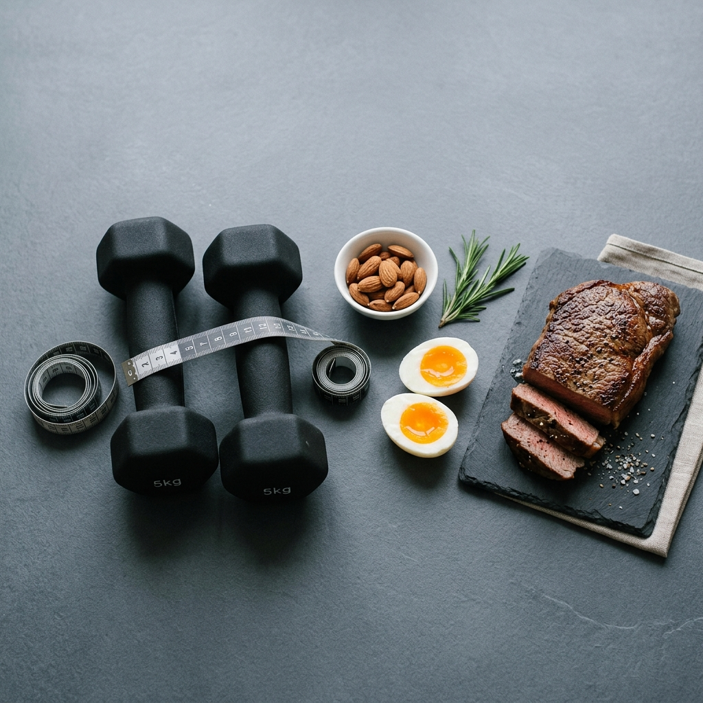

Hur mycket protein behöver du per dag?

Frågan verkar enkel men svaret är mer nyanserat än en enda universalsiffra. Ditt proteinbehov beror på din kroppsvikt, hur aktiv du är, dina mål och till och med din ålder. Låt oss gå igenom det steg för steg.
Utgångspunkten: gram per kilo kroppsvikt
Det vetenskapliga sättet att mäta proteinbehov är i gram per kilogram kroppsvikt (g/kg). Det är ett bättre mått än ett fast gram-antal eftersom en person på 50 kg och en på 100 kg självklart har helt olika behov.
| Aktivitetsnivå | g per kg kroppsvikt | Exempel: 70 kg | Exempel: 90 kg |
|---|---|---|---|
| Inaktiv / stillasittande | 0,8–1,0 g/kg | 56–70 g | 72–90 g |
| Lätt aktiv (promenader, gym 1–2 ggr/v) | 1,0–1,2 g/kg | 70–84 g | 90–108 g |
| Måttligt aktiv (tränar 3–4 ggr/v) | 1,2–1,6 g/kg | 84–112 g | 108–144 g |
| Mycket aktiv (styrketräning 5+ ggr/v) | 1,6–2,0 g/kg | 112–140 g | 144–180 g |
| Elitidrottare / aktivt muskelbygge | 2,0–2,4 g/kg | 140–168 g | 180–216 g |
Ska du räkna på faktisk eller idealvikt?
Om du bär på ett märkbart överskott av kroppsfett, rekommenderar de flesta forskargrupper att du baserar ditt proteinbehov på din målvikt (eller en “normalvikt” för din längd) snarare än din nuvarande vikt. Fettvävnad kräver inte nämnvärt mer protein för underhåll, så att multiplicera med din faktiska vikt kan ge ett onödigt högt och svåruppnått mål.
Timing: Spelar det någon roll när du äter proteinet?
Ja, men inte lika dramatiskt som tillskottsindustrin vill påskina. Det viktigaste är det totala dagliga intaget. Det sägs att kroppen kan ta upp ca 25–40 gram per måltid för muskelsyntes, och att fler, jämnt fördelade portioner under dagen kan vara marginellt bättre än att trycka i sig allt på kvällen. Men om ditt totala dagliga intag är rätt är det det som räknas.
En praktisk regel: sikta på 20–40 gram per måltid, 3–5 gånger om dagen.
Räkneexempel: En normal dag
Låt oss ta en person på 80 kg som tränar styrketräning 4 gånger i veckan. Målet är 1,8 g/kg = 144 gram per dag. Så här kan det se ut:
- Frukost: 3 ägg + 150g kvarg = ca 35g protein
- Lunch: 150g kycklingbröst + bönor = ca 45g protein
- Mellanmål: 200g Arla Proteinyoghurt = ca 20g protein
- Middag: 150g lax + grönsaker = ca 40g protein
- Totalt: 140g protein – nära nog utan ett enda gram pulver.
Hitta de billigaste proteinkällorna för just din budget: Öppna PPK-kalkylatorn →